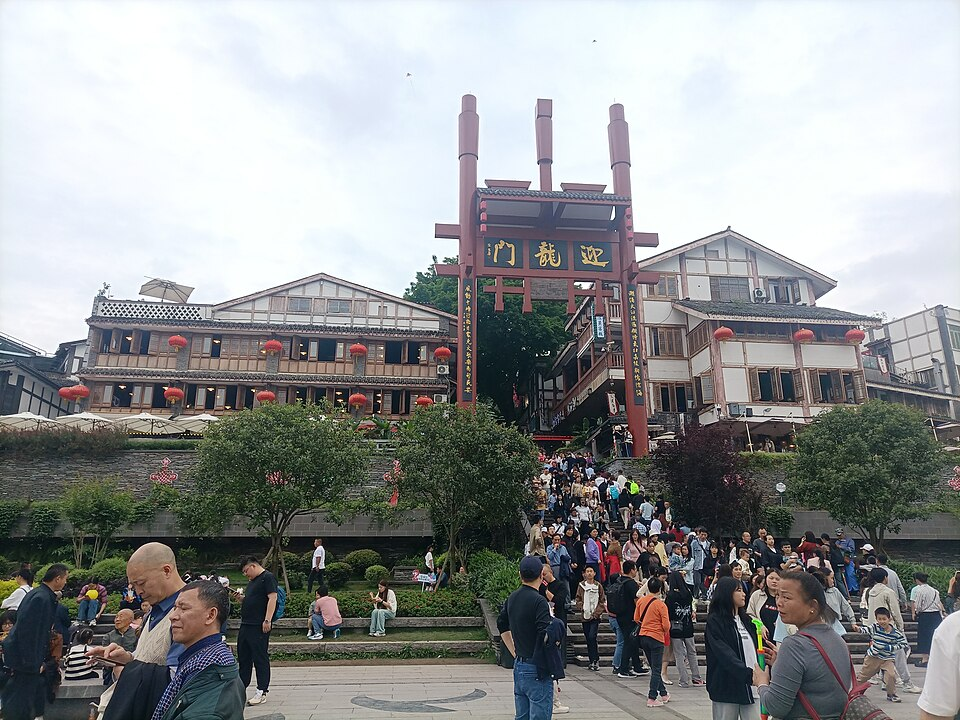
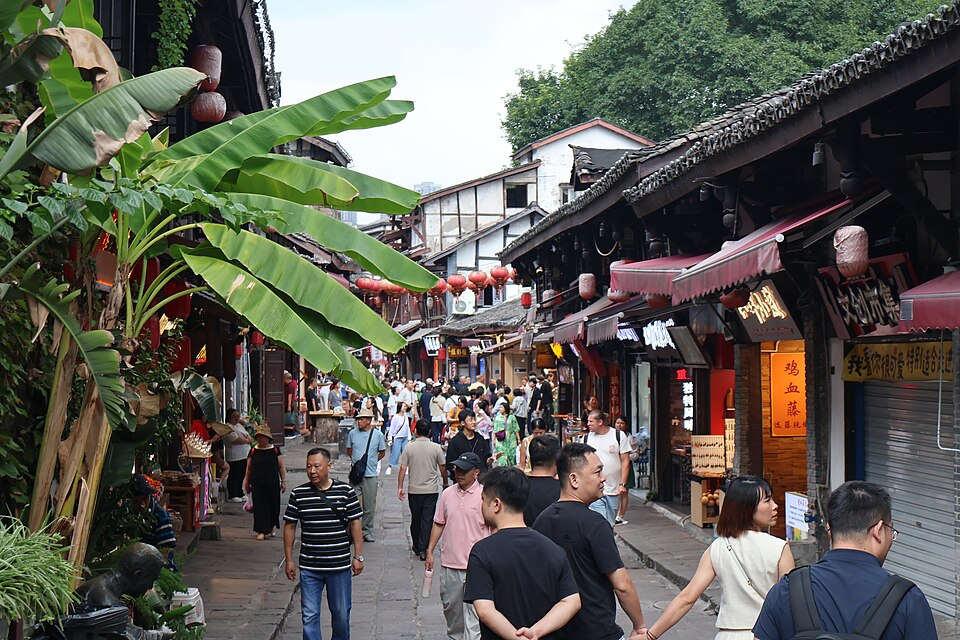

★ 兩篇以上攻略或官方都提到；單一來源 只有一篇。 大眾點評、小紅書、知乎擋爬蟲，人均多半未查到；有寫的是攜程或去哪兒的數字（2026/11 查）。點菜記得說「微辣」。
🏮 磁器口古鎮
目標
① 迎龍門與江邊：「紫氣東來」牌坊，下面就是嘉陵江 ★ ② 寶輪寺：免費蓋章 ★ ③ 青石板老街：日落 17:55 前逛正街。後街（地鐵站這側，人較少）進，正街出：晚餐就在正街。
路線（14:20～17:30，步行共約 1.4 km、約 17 分）
- 起14:20 後街 吊腳樓廣場：1 號線磁器口站 1 號口出 ★，先到後街。後街是新街區、像文創園，人比老街少 單一來源；地標有重慶溫度（舊煙囪改的溫度計）、吊腳樓廣場、井中天廣場、翰林橋 ★ 沒有合格照片：百度圖片搜尋 →
- 114:55 寶輪寺 ★：免費蓋章 ★；在古鎮最高處 單一來源；門票兩說（無門票：本地寶 2025；5 元：舊攻略）；開放 7:30–18:00 單一來源。沿鳳凰溪邊步道過去，途中有免費公廁（OSM）（步行約 11 分） 沒有合格照片（Commons 只有 2014 年的）：百度圖片搜尋 →
- 215:40 磁器口橫街：寶輪寺就在橫街上 單一來源；「慢生活一條街」，有咖啡、茶館，可以坐下休息 單一來源（步行約 0 分，30 m）
- 316:20 正街北端（江邊）：迎龍門、河街碼頭 ★：迎龍門兩旁有茶館 單一來源，蓋碗茶約 5 元、續水免費 單一來源。OSM 沒有標迎龍門，位置是研判（正街最靠江的一端）（步行約 3 分）

Xiumuzidiao・CC BY 4.0・Wikimedia Commons（2024-05） - 416:55 磁器口正街（往回走） ★：青石板老街，日落 17:55 前拍。麻花認「陳昌銀」或「陳建平」招牌（陳建平在正街 60 號 單一來源）（步行約 2 分）

TarnishedPath・CC BY-SA 4.0・Wikimedia Commons（2025-09，照片沒標是哪條街） - 終17:30 千年古鎮鷄雜（正街 69 號）：晚餐；茂莊（正街 78 號）在旁邊（步行約 1 分）。飯後沿正街往西南走回磁器口站（約 965 m、12 分），正街南段、金蓉門在這段路上，18:00 後開燈 單一來源
時刻是估算（步行用 OSRM 距離 ÷ 80 m／分，停留時間自己分配）；座標取自 OpenStreetMap，迎龍門、碼頭、金蓉門、寶善宮、翰林院 OSM 沒有標。江邊是死巷，從橫街口過去約 95 m 要走回來（研判）。
時間
- 人少是上午 9～11 點（二手，3 篇方向一致）；這天排在下午，所以先走人少的後街。網易 2026-09 說下午 16 點後再逛主街 單一來源
- 商鋪一般營業到 22:00 單一來源；開放時間兩說（全天／10:00–20:00），街區本身免費
實用
- 街區免費；鐘家院暫停營業（攜程 2026/11），只能看外觀
- 廁所：鳳凰溪邊步道上有免費公廁（OSM）；寄物：磁器長歌臨時遊客服務中心免費 9:00–18:00 單一來源
- 2026 年局部閉館、施工的公告：未查到（不等於確定開放）
吃的、文創
- 順路：陳昌銀麻花 ★（原味、椒鹽、麻辣、蜂蜜；「1907 年創、重慶老字號」是店家自稱）；陳建平麻花（磁器口總店） ★（冰糖糯米、椒鹽、椰奶；正街 60 號，8:00–21:00 單一來源）。⚠️ 磁器口有四家不同品牌的「陳麻花」，有的老闆不姓陳（36氪 2022）：認招牌
- 順路：茶館蓋碗茶約 5 元，迎龍門兩旁有 單一來源（沒有店名）；翰林院落座收茶費
- 早餐類，下午不一定有：大王油茶（米漿配脆饊子，不辣）單一來源
- 踩雷（旅行社文章，可信度低）：10 元 3 串烤魷魚、「手工」牛肉乾、「免費品茶」後強推茶葉、古裝拍照選片加錢；特產店比市區超市貴。沒有來源寫到「微辣」：點菜先問能不能微辣、小鍋
來源：搜狐 2024-06、攜程遊記 2024-02、重慶本地寶、36氪 2022-11、網易 2026-09、OpenStreetMap。筆記：1211_磁器口攻略、1210_磁器口_園內路線